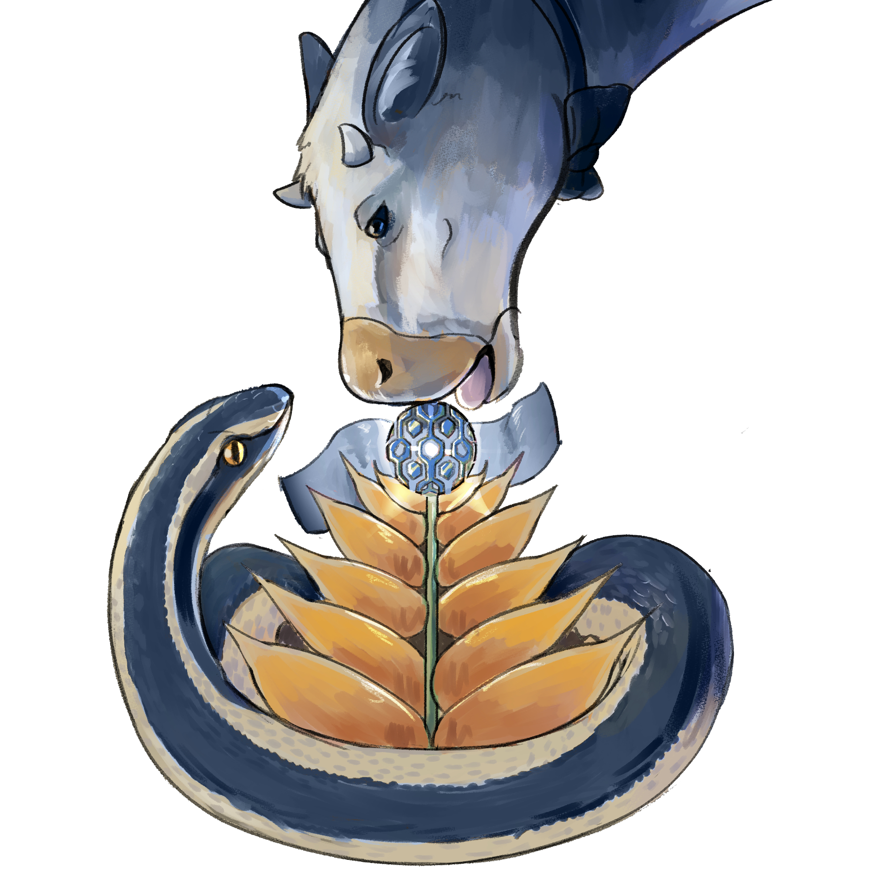

Organicé el Seminario de Estudiantes de Pregrado en Matemática en la PUC de 2020 a 2023. Acá está la lista de charlas.
2023
- 30/03: Benjamín Maldonado, Contando caminatas en grafos.
- 19/04: Bruno Andrades, Una introducción y conclusión a la teoría extremal de grafos I.
- 27/04: Bruno Andrades, Una introducción y conclusión a la teoría extremal de grafos II.
- 25/05: Matías Fernández, Typst: ¿el reemplazo de LaTeX?
- 01/06: Bruno Andrades, El grafo aleatorio G(n,p).
- 07/09: Matías Abbagliati, Topología de sistemas modales I: los operadores de Kuratowski.
- 14/09: Lucas Garrido, Topología de sistemas modales II: axiomas de inferencia modal.
- 26/10: Benjamín Macías, Teorema navideño de Fermat.
- 09/11: Bruno Andrades, Entropía en combinatoria.
- 14/11: Agustín Gilbert, Sobre la equivalencia entre el postulado de paralelas y el teorema de Pitágoras.
2022
- 22/04: Bruno Andrades, El postulado de Bertrand.
- 23/09: Mathías Luengo, El teorema de Böttcher.
- 07/10: Camila Guajardo Vásquez, Teoría de Morse para variedades diferenciables compactas.
- 21/10: Rocío Sepúlveda, La ecuación de Pell y sus aplicaciones.
- 28/10: Juan Noguera, El teorema de Smale–Hirsch.
- 04/11: Juan Pablo Vega, Burbujas y un poco de Weierstrass.
- 18/11: Agustín Gilbert, Caminatas aleatorias unidimensionales y probabilidad de extinción.
2020 (Online)
- 12/06: Nicolás Vilches, Triangulaciones y fracciones continuas.
- 26/06: Eduardo Reyes, Lo que no te han contado sobre grupos.
- 11/07: Felipe Pérez Juegos que son justos pero no deberían serlo.
- 18/07: Darlin Soto, Pronosticando el brillo de una estrella.
- 25/07: Fernando Figeroa, Permutaciones y polinomios.
- 01/08: Danilo Álvares, Sequential learning: a Bayesian approach.
- 07/08: José Gabriel Torres, Superficies mínimas.
- 14/08: Camilo Conzález, Introducción a la regresión logística.
- 21/08: Ángela Flores, La dinámica de las fracciones continuas.
- 04/09: Rodrigo Bazaez Probar teoremas por computador, ¿una amenaza para las matemáticas?
- 12/09: José Samper, El misterioso mundo de las esferas trianguladas.

Fig. 2: Matemáticas, por Elías Aguilera.